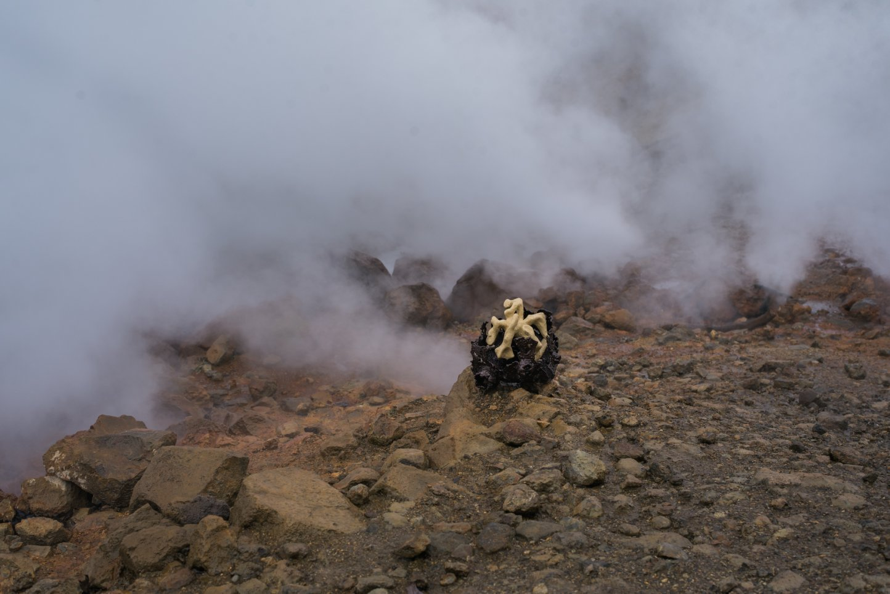

Яна Васильева. Климатрон Мутновско-Халактырско-Авачинский. Краснодар, Россия
«Климатроны» - серия site-specific скульптур, исследующая отношения человека и среды через практику физического присутствия. Каждая работа переносится к месту установки пешком (иногда на протяжении десятков километров) и становится результатом длительного маршрута, в котором путь, ландшафт и акт размещения являются неотделимыми частями произведения. Скульптура не помещается в природу как автономный объект, а вступает с конкретным местом в отношение сосуществования.
Это непростое во многих смыслах странствие в том числе и физическое стало моим спасением и нахождением внутреннего баланса. Работы не были брошены в природе, каждая была привезена назад в Краснодар.
«Климатроны» изначально существуют unframed: их форма определяется не выставочной архитектурой, а временем, погодой, рельефом, расстоянием и опытом присутствия.
Представленная фотография не является документацией завершённой работы. Она становится кульминацией этого процесса и новой стадией существования произведения. Переходя от ландшафта к цифровому файлу, затем к печати и выставочному пространству, работа проходит через последовательность режимов репрезентации, каждый из которых заново производит её смысл. Здесь рамка выступает не ограничением изображения, а механизмом его непрерывного становления.
Представленная фотография не является документацией завершённой работы. Она становится кульминацией этого процесса и новой стадией существования произведения. Переходя от ландшафта к цифровому файлу, затем к печати и выставочному пространству, работа проходит через последовательность режимов репрезентации, каждый из которых заново производит её смысл. Здесь рамка выступает не ограничением изображения, а механизмом его непрерывного становления.
- - -